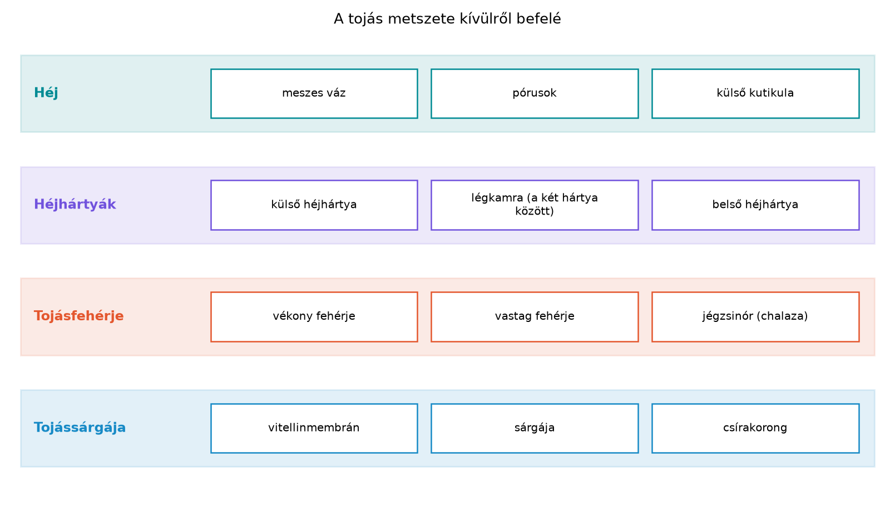

A tojás a cukrászüzemben nem egyszerű darabáru: naponta válik krém, hab, tészta vagy fényes lekenés alapanyagává. Ha reggel a műhelyben a fagylaltfőző pasztőrözött sárgáját kér, a piskótához viszont egész tojást, a tojásfehérje-habhoz pedig tökéletesen elválasztott fehérjét, pontosan tudnod kell, mit mérj, mit ellenőrizz, és miért nem mindegy, hogy a tojást hidegen vagy melegen, egészben vagy szétválasztva dolgozod be. Ez az alfejezet a tojást mint nyersanyagot a cukrász szemével tanítja: felépítését, frissességét, jelölését, tárolását és technológiai szerepeit. Azt is tárgyaljuk, hogyan csökkenthető a nyers tojás Salmonella-kockázata a műhelyben.
Képzeld el, hogy egy tojást feltörnél, de előbb keresztmetszetben vizsgálod. Kívülről befelé haladva réteges szerkezetet látsz. Ez a rétegesség határozza meg a védelmet, a frissességvizsgálatot és a feldolgozást is.

A diagram felülről lefelé, kívülről befelé mutatja a rétegeket: felül a héj, alul a sárgája. A tompa végben a két héjhártya között légkamra alakul ki, amely a tárolás során növekszik.
Definíció. A tojás a szárnyasok ivari sejtje, amely a cukrászatban elsősorban tyúktojást jelent. Egész tojásnak, tojásfehérjének és tojássárgájának más a szerepe: a fehérje habot ad, a sárgája emulgeál és dúsít, a héj alatti tömeg pedig mérhető anyag.
A tojás fő részei:
Az alábbi táblázat rendszerezi a tojásrészek főbb technológiai szerepét.
| Tojásrész | Főbb alkotók | Cukrászati szerep | Érzékenység/hiba |
|---|---|---|---|
| Héj és héjhártya | Kalcium-karbonát, fehérje | Véd; a légkamra a frissesség jele | Repedés esetén szennyeződhet |
| Tojásfehérje | Víz, albumin-fehérjék, nyomokban ásványi anyag | Habképzés, hővel dermedő váz | kb. 60–62 °C-on kezd alvadni, szilárdan kb. 80 °C körül dermed (ellenőrizendő); zsír vagy sárgája rontja a habot |
| Tojássárgája | Víz, zsír, fehérje, lecitin, színezék | Emulgeálás, kötés, dúsítás, sárgítás | kb. 65 °C-on sűrűsödik, kb. 70 °C körül dermed (ellenőrizendő) |
| Egész tojás | A fentiek keveréke | Piskóta, forrázott tészta, krém kötőanyaga | Higiéniai kockázat hőkezelés nélkül |
A cukrász receptúra soha ne csak „4 tojást” mondjon, mert az S-es és az XL-es tojás tömege nagyon különbözik. A darabszám gyors eligazítás, de a gyártásban a feltört tojás tömegét kell mérni.
Szabály. A tyúktojás kereskedelmi méretosztályokba sorolható; a határokat a hatályos uniós és magyar előírás adja meg. A közepes, M osztályba tartozó tojás tömegét a könyvben tanulási példának vesszük, mert a tényleges súlyt mindig a tojás mérésével kell igazolni.
Példa szerinti tömegosztályok (ellenőrizendő: hatályos osztályozás):
| Osztály | Teljes tojás tömege (g/db) | Gyakorlati jellemző |
|---|---|---|
| S | 53 alatt | Kicsi, díszítőnyomóhoz vagy kis adaghoz |
| M | 53–63 | Általános cukrászati méret; 1 db ≈ 58 g |
| L | 63–73 | Nagyobb; ha recept „nagy tojást” mond |
| XL | 73 felett | Kevésbé jellemző, tömegre pontos |
Jogszabály. A tojás forgalmazására, osztályozására és jelölésére uniós és magyar élelmiszerjogi előírások vonatkoznak. A pontos rendeletszámot, az osztályhatárokat, a termelőkód felépítését és a fogyasztói tájékoztatás részleteit a kiadás előtt ellenőrizni kell a hatályos szabályozás alapján. Tilos a szöveget hatósági idézetként használni.
A héjra nyomott termelőkód első számjegye a tartási módra utal. A könyv tanulási példája szerint:
A további kód az országot és a termelő gazdaságot azonosítja; ezt a gyakorlatban a szállítói bizonylaton és a csomagoláson kell egyeztetni (ellenőrizendő: a számjegyek pontos jelentése és a kód szerkezete).
Az ábra fiktív mintakódja (1-HU-0000123) három részre bontva: a tartásmód számjegye (1), az országkód (2) és a termelőhely azonosítója (3). A dobozcímkén a méretosztály (4), a minőségi osztály (5), a minőségmegőrzési idő (6) és a csomagolóhely kódja (7) olvasható; az átvételkor ezeket egyeztetjük a szállítói bizonylattal. A HTML-kiadásban a kód részeire mutatva megjelenik a jelentésük.
A minőségi osztályok a frissességet és az élelmiszer-biztonsági alkalmasságot különítik el. A friss, közvetlen fogyasztásra szánt asztali tojás rendszerint A osztályú. A B osztályú tojást az élelmiszeripar tartósított termék előállításához használhatja; közvetlen fogyasztói forgalomba nem feltétlenül kerülhet (ellenőrizendő: hatályos osztályozási szabály). A repedt, szennyezett vagy erősen szennyezett tojást átvenni tilos; ha repedést találsz az átvételnél, a tételt el kell különíteni és jelezni kell.
A tojás Salmonella-kockázata miatt a tárolás ugyanolyan fontos, mint a hőkezelés.
A tojás frissessége kettős kockázatot is befolyásol: a mikro-biztonságot és a technológiai használhatóságot. Régi tojás fehérjehabja gyengébb, sárgája könnyebben szétfolyik, és a héj is gyengébb.
Definíció. A lámpázás a tojás belső szerkezetének fényforrás előtti vizsgálata. A légkamra magasságából, a sárgája árnyékából és a héj repedéséből következtethetünk a frissességre.
Higiénia. A vízpróba csak oktatási minta vizsgálatára való: a vízbe merített tojást ne tedd vissza a tárolóba, hanem még aznap használd fel hőkezelt termékben, vagy selejtezd. Átvételkor lámpázással és szemrevételezéssel vizsgálj, ne vízzel. A lámpázásnál is ügyelj arra, hogy a tojást ne tedd meleg felületre; a vizsgálat után kezet kell mosni, mert a héj szennyeződést hordozhat.
Gyakorlati frissességjelek:
Az ábra bal oszlopa a friss, jobb oszlopa az idős tojást mutatja. A vízpróbában a friss tojás a pohár alján fekszik (1), az idős tojás tompa végével felfelé billen vagy úszik (2). Lámpázáskor a tompa végen lévő légkamra a friss tojásban kicsi, az idősben nagy (3). Feltörve a friss tojás sárgája domború (4), körülötte vastag fehérje-gyűrű van (5); az idős tojás fehérjéje híg, szétfolyik (6), sárgája lapos (7). A HTML-kiadásban egy választóval a friss és az idős tojás képe váltható.
A tojás a cukrászati technológiában egyszerre könnyítő szerkezetépítő, emulgeálószer és hőre dermedő kötőanyag. A hatás attól függ, hogy a fehérjét, a sárgáját vagy az egész tojást használjuk-e.
Habképzés. A tojásfehérje fehérjéi a mechanikai habverés során levegőt zárnak be, és a folyadék–levegő határfelületen vékony hártyát alkotnak. A habverés részben denaturálja a fehérjéket, így a légbuborékok fala stabil lesz. Kevés sav vagy só segíthet a hab stabilizálásában; a zsír, a sárgája maradványa vagy a zsíros edény viszont gyengíti a habot, mert a zsírfilm megakadályozza a fehérjehártya kialakulását. A habot azonnal be kell dolgozni, mert később a folyadék kiválik.
Emulgeálás. A tojássárgája természetes emulgeálóanyaga a lecitin, amely foszfolipid. Ez teszi lehetővé, hogy a víz és a zsiradék finom, homogén elegyben maradjon; erre épül a sárgáról készült vajkrém, a majonéz elvű mártás és a sárgája-kakaóvajas töltelék. Az emulzió készítésekor a zsiradékot fokozatosan kell a sárgájához adagolni, hogy ne csapódjon ki.
Kötés és dermedés. Az egész tojás a sütés során a hő hatására megalvad, és a masszát összefogja. A tojásfehérje kb. 60–62 °C-on kezd alvadni, szilárdan kb. 80 °C körül dermed; a sárgája kb. 65 °C-on sűrűsödik, és kb. 70 °C körül dermed (ellenőrizendő: szakirodalmi táblázat; a cukor- és savtartalom eltolja a hőfokot). Ezért a tojásos krémet addig kell hőkezelni, amíg a keverék besűrűsödik, de forralni nem szabad, mert a rostos kicsapódás csomókat ad.
Megjegyzés. A tojásban lévő fehérje a hőkezelés mellett cukorral és savval is kölcsönhat; ezért a cukorral dúsított tojássárgája később alvad, és selymesebb krémet ad. A pontos hőfok mindig a termékfejlesztési leírás vagy a gyártói adatlap szerint változhat.
A műhelyben kétféle tojással dolgozhatsz: héjas tojással és tojástermékkel. A tojástermék pasztőrözött, ezért kisebb a mikrobiológiai kockázata.
Definíció. A tojástermék héjas tojásból feltört, szűrt és hőkezelt, fagyasztott vagy porított készítmény. Ilyen a pasztőrözött tojáslé, a sárgája, a fehérje és a por, illetve ezek élelmiszeripari keverékei. Magyarországon a cukrászatban a folyékony pasztőrözött tojás és a fagyasztott sárgája gyakori.
Higiénia. A nyers tojás héja és esetenként a belseje Salmonella baktériumot hordozhat, ezért a nyers tojásból készült, hőkezelés nélküli krémet vagy habot tilos olyan termékbe tenni, amely nem sül végig. Ha a recept nyers tojást ír elő tiramisuhoz vagy mousse-hoz, azt a műhelyben pasztőrözött tojástermékkel vagy hőkezelt, melegen vert változattal kell helyettesíteni. A pasztőrözött tojáslé hőfok-idő kombinációját a gyártó adatlapja igazolja; ezt az átvételkor meg kell őrizni.
Tilos. megszakítani a hűtési láncot, újrafagyasztani a felengedett (felmelegedett) pasztőrözött tojásterméket, és későbbi felhasználásra tárolni a nyers tojásból készült, hőkezeletlen krémet.
A tojástermékek felhasználásakor mindig tömegben mérj; a dobozon feltüntetett tömeget és a fagyasztott tömb olvasztási veszteségét is ellenőrizd. A fagyasztott pasztőrözött tojást hűtőben, lassan olvaszd ki, nem szabad szobahőmérsékleten vagy meleg vízben olvasztani.
A technológiai számításban a tojást mindig grammra kell átszámolni, mert a pasztőrözött tojástermék és a héjas tojás darabszáma nem cserélhető fel automatikusan.
Példa: héjas tojásból tojáslé mennyiség. Egy piskótarecept 8 db M-es tojást ír. Az átvételi nyilvántartás szerint az M osztályú tojás átlagos egész tömege 58 g, a héj hányada 11 %. Hány gramm feltört tojást (hozzávetőleges tojáslé) kell kimérni?
Megoldás. A héj nélküli ehető tömeg egy tojásra:
Nyolc tojásra:
Ellenőrzés. Ha a nyolc egész tojás héjas tömege , a héjveszteség , így . Az eredmény összhangban van.
Példa: tojássárgája-igény átszámítása. Egy krém 200 g pasztőrözött tojássárgáját igényel. Körülbelül hány db M-es héjas tojásból nyerhető ki? Tegyük fel, hogy egy M-es tojás ehető tömege 52 g, és a sárgája ennek 35 %-a.
Megoldás. Egy tojás sárgájatömege:
A szükséges darabszám:
Ellenőrzés. 11 db sárgája . Tehát kerekítve 11 db M-es tojás szükséges, de a gyártásban célszerű 12 db-ot feltörni, mert a veszteség és a konyhakész eltérés miatt a pontos grammot a mérleg dönti el.
Ebben a gyakorlatban nem készítesz készterméket, hanem a tojás minőségét és a fehérje habtulajdonságát vizsgálod. Ez az alapművelet később a felvert tésztákhoz és a habkrémekhez kell.
Cél: felismerni a friss A osztályú tojást, megmérni a tömegét, és stabil tojásfehérjehabot készíteni.
Eszközök és anyagok: 2–3 db M-es tyúktojás, digitális konyhai mérleg, áttetsző mérőpohár, lámpa, hideg vizes edény, kézi habverő vagy tiszta gépi habverő (oktatás után), zsírtalan tál, citromlé vagy kevés cukor.
Higiéniai munkakezdés. Vegyél munkaruhát, köss hajat, vedd le az ékszert. Moss kezet, és tiszta, zsírtalan edényekkel dolgozz. A tojás héját ne mosd folyó víz alatt, mert a héj pórusain át szennyeződést vihetsz be; a feltörés előtt a közvetlen szennyeződést száraz papírtörlővel töröld le.
Biztonsági korlát. A gépi habverés tanműhelyi vagy üzemi környezetben, oktatás után és felügyelet mellett végezhető; otthon kézi habverővel, kis adagban gyakorolj.
Lépések:
Ellenőrzési pontok: a hab csúcsa karakteres, a tál megdöntésével még nem csúszik. Ha a hab szemcsés, túlverted; ha folyik, zsír vagy sárgája került bele.
Tipikus hibák: meleg tojás használata, zsíros tál, sárgája maradvány a fehérjében, a hab azonnali bedolgozásának elmulasztása.
Takarítás. A felületet és az edényeket meleg mosószeres vízzel mosd el, a tojáshéjat külön hulladékba tedd, kezet moss.
A tojás érzékszervi vizsgálatát átvételkor és felhasználás előtt el kell végezni.
| Hiba | Tünet | Ok | Megelőzés/javítás |
|---|---|---|---|
| Gyenge fehérjehab | A hab folyik, nem tart csúcsot | Zsíros edény, sárgája maradvány, régi tojás | Zsírtalan tál, gondos szétválasztás, friss tojás; új habot verhetsz új fehérjéből |
| Csomós tojásos krém | A krémben apró rostos szemcsék | Túl gyors melegítés, forrás közbeni alvadás | Mérsékelt hőfok, folyamatos keverés; ha kicsapódott, szűrés vagy új adaggal hígítás kísérelhető meg |
| Szétváló emulzió | A vajkrém vagy ganache teteje kifényesedik, a zsiradék kiválik | A zsiradékot túl gyorsan vagy hideg tojássárgához adták | A zsiradékot fokozatosan adagold, a keverék legyen szobahőmérsékletű |
| Szalmonella-kockázat | Hőkezelés nélküli krém nyers héjas tojásból | Nyers tojás felhasználása hőkezelés nélkül | Pasztőrözött tojástermékkel vagy hőkezelt krémalappal helyettesítsd |
Egy cukrászüzemben délutánra nagyszámú somlói galuskához készül a tojásos krém. A munkatárs nyers héjas tojást akar használni, mert a receptúra „3 tojássárgáját” ír. A higiéniai felelős közbelép: a nyers tojásból készült krém hőkezelés után ugyan biztonságos lehet, de az adagolás darabról változó, és a héjas tojás feltörése körüli keresztszennyeződés kockázata nagy. A tételt pasztőrözött tojássárgájából készítik. A sárgáját lemérik, a cukorral elkeverik, lassan melegítik, amíg 65–70 °C körül kissé sűrűsödik (ellenőrizendő: a recept hőfok-idő paramétere). A krém selymes lesz, és a vendégek számára kisebb a kórokozó-kockázat. A nyers héjas tojást aznap reggeli sütéshez használják fel, de nem keverik hideg krémbe.
Válaszolj röviden.
1. feladat (A) Sorold fel a tojás három fő ehető részét és egy-egy technológiai szerepüket.
2. feladat (A) Egy recept 6 db L-es tojást ír. Az L-es egész tojás átlagos tömege 68 g, a héjhányad 11 %. Hány gramm feltört tojást mérj?
3. feladat (B) Egy krémhez 240 g pasztőrözött tojássárgája szükséges. Egy M-es tojás ehető fehérje + sárgája tömege 52 g, ebből a sárgája 35 %. Hány db M-es tojásból nyersz ki közelítőleg 240 g sárgáját? Hány db-ot törj fel, ha 5 % sárgajaveszteséggel számolsz a feltörésnél?
4. feladat (B) Tojásfehérjehab készítésekor 150 g fehérjéből indulsz. Ha a hab túlverés nélküli készre veréskor térfogata kb. hatszoros, mekkora a hab várható térfogata literben, ha a fehérje sűrűségét 1,03 g/ml-nek veszed? (Emlékeztető: .) Tizedesvesszővel számolj.
5. feladat (C) Egy munkatárs azt mondja: „régi tojásból éppolyan jó a hab, mint frissből, ha elég sokáig verjük.” Magyarázd el, miért nem igaz ez, és milyen vizsgálattal döntenéd el, hogy a tojás még alkalmas-e habnak.
6. feladat (D) Végezd el a gyakorlati útmutató szerinti tojásvizsgálatot és habverést. Tölts ki egy rövid táblázatot: mért héjas tömeg, vízpróba, légkamra becslés, feltört szag, hab állaga. Értékeld, hogy a tojás megfelelne-e egy hőkezelt piskótához, és indokld.
Önellenőrzés – válaszok
1. feladat megoldása. A három ehető rész: tojásfehérje (habképzés, hőre dermedő váz), tojássárgája (emulgeálás, dúsítás, szín), és az egész feltört tojás (kötés, piskótaszerkezet). A héj nem ehető.
2. feladat megoldása. Egy L-es tojás ehető tömege:
Hat tojás:
3. feladat megoldása. Egy M-es tojás sárgájatömege:
Szükséges sárgája 240 g:
Tehát 14 db M-es tojás szükséges. Ha 5 % veszteséggel számolsz, a bruttó sárgamennyiség:
Darabszám a bruttó mennyiségből:
Célszerű 14 db-ot feltörni, és a pontos grammot mérlegen ellenőrizni.
4. feladat megoldása. A fehérje térfogata:
A hab térfogata hatszoros:
5. feladat megoldása. A régi tojásban a vastag fehérje már híg, a fehérje-hártya gyengébb, és a légkamra nagyobb. Hosszú veréssel a már degradált fehérjék nem építenek stabil habhártyát; a hab könnyen összeesik. A frissességet vízpróbával, lámpázással és feltörés utáni képpel lehet ellenőrizni. Ha a sárgája lapos, a fehérje híg, a habhoz már nem ideális.
6. feladat megoldása. A gyakorlati feladatnál az értékelési szempontok: a mért tömeg a tömegosztályba illik-e, a vízpróba süllyedést mutat-e, a légkamra becslése kicsi-e, a feltört tojás szaga semleges-e, a hab csúcsot tart-e. A hab megfelel, ha fényes, nem folyik, és a tál megdöntésével stabil. A piskótához hőkezelés következik, ezért a friss tojás megfelelő, de a habverés módja is dönt.
A tojás a cukrászatban egyszerre habképző, emulgeáló, dúsító és hőre kötő nyersanyag. A tojásfehérje a mechanikai habverés során levegőt zár be; a fehérje denaturációja stabilizálja a habot. A tojássárgája lecitintartalma miatt emulgeál, és hő hatására besűríti a krémeket. A fehérje kb. 60–62 °C-on kezd alvadni, szilárdan kb. 80 °C körül dermed; a sárgája kb. 65–70 °C-on sűrűsödik, illetve dermed (ellenőrizendő: a keverék szerint). A héjas tojást egyenletes, hűvös hőmérsékleten, külön, a késztermékek alatt, FIFO szerint tároljuk, és a tojás kezelése után kezet mosunk. A tojás tömegosztálya S, M, L, XL tanulási példa; a gyártásban a feltört tojás tömegét mérjük. A héjszín nem minőségjelző. A frissességet vízpróbával, lámpázással, szag- és feltöréskép-vizsgálattal ellenőrizzük. A nyers héjas tojás Salmonella-kockázatot hordozhat, ezért hőkezelés nélküli hideg krémbe pasztőrözött tojásterméket kell használni. A pasztőrözött tojáslét, sárgáját és fehérjét hűtve, felengedve, tömegre mérve használjuk. Ez a tudás a krémek, a felvert tészták, a tojáshabos készítmények és a forrázott tészták alfejezeteiben tér vissza.
A szöveg a 852/2004/EK rendelet általános higiéniai elveire, a tojás forgalmazására vonatkozó uniós és magyar előírásokra, valamint a pasztőrözött tojástermékek gyártói adatlapjára támaszkodik. Ellenőrizendő: a tömegosztályok határai, a minőségi osztályok és a termelőkód pontos jelentése; a légkamra határértéke; a tojás héjhányad és sárgájaarány; a tojásfehérje és sárgája alvadási hőfoka; a pasztőrözött tojástermék felengedési és hűtési paraméterei. A megadott hőmérsékletek, osztályhatárok és arányok tanulási példák, nem hatósági értékek.